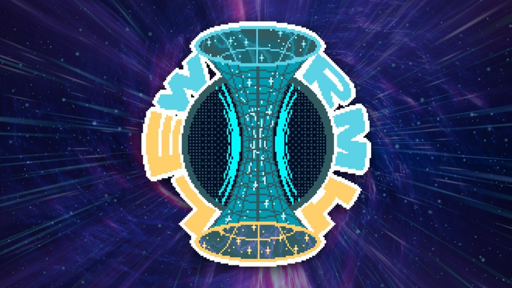
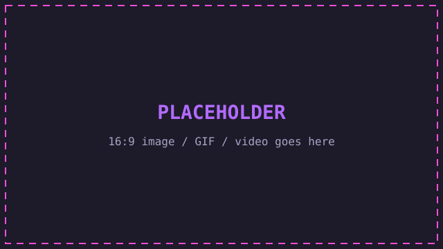

Hi, I'm
Brayden Reed
Tech Enthusiast with backgrounds in game dev, software engineering and graphic design. Knowledge in every field.
About
At work
Out of high school, I began my career in IT almost immediately. In order to graduate, I was required to complete an internship in a physical IT environment. That is when I began working for Corewell Health System (formerly Lakeland Hospital) as an entry level technician.
From there, I began to continuously seek work in IT and search for opportunities to grow in my field. During my years I was able to get hands on experience in healthcare systems, school systems, manufacturing locations and corporate offices.
As it stands currently, I am a Technical Support Specialist at one of the largest healthcare employers spanning the Indiana-Michigan border. I work directly with users, administrators and executives both hands on and remotely. My responsibilities change from day to day which has helped me gain extensive knowledge in every aspect as a field technician. My responsibilities often include, but are not limited to:
- Networking/Server Managing
- Reacting Quickly to Emergent Issues
- Working With and Fixing Various Hardware
- Laptops and Desktops
- Printers, Scanners and Various Readers
- Routers and Switches
I personally believe that my field of work is ever expanding, especially now with the rise of artificial intelligence. With this ever expanding path in front of me, I want to gain as much knowledge as possible and use this knowledge to become an asset to employers.
Off the clock
Outside of work, I take up technology as a hobby as well. I remember having a console in the house since I first gained consciousness. It started off with a PlayStation 2, then the PSP, then a Wii and so on. Fast forward to high school where I discovered just how expansive the internet really was when I was able to build my first PC tower.
Now come present day, I find myself doing a lot more than just gaming. While I still play games, I often find myself thinking that I could make something just as great—or even better—than the games that I enjoy. So I got to work learning Unity, Unreal Engine 5, Godot, Lua and just about any other game dev option out there. I found some success creating some of the most popular mods for big name games like Balatro and R.E.P.O. I learned HTML, CSS and JavaScript to create websites. I just want to create something.
For better or for worse, my life doesn't fully revolve around technology. I enjoy spending time with my beautiful girlfriend. We go on walks and hikes and just try being outdoors. I enjoy reading books on things that I don't fully understand in hopes to know more about them. I like bowling and going to the gym just to name a few things.
Projects
-
-

Pixel art / game / tool
Project Title
PLACEHOLDER. A third card so you can see how the grid fills. Delete it or turn it into a real project.
Role: Your role
Pixel art / game / tool
Project Title
PLACEHOLDER. A third card so you can see how the grid fills. Delete it or turn it into a real project.
Role: Your role
Accomplishments
-
Released Wormhole
PLACEHOLDER. One line on what it was and why it mattered (downloads, feedback, what you learned).
-
Released High Roller
PLACEHOLDER. One line on what it was and why it mattered.
-
Work milestone
PLACEHOLDER. A project you shipped, a cert, a promotion, a system you migrated.